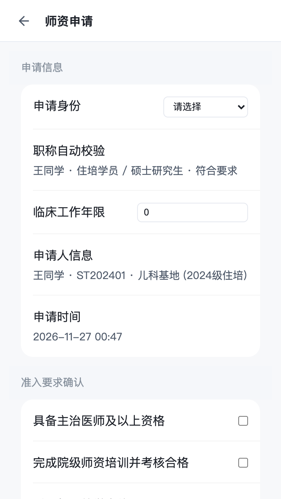
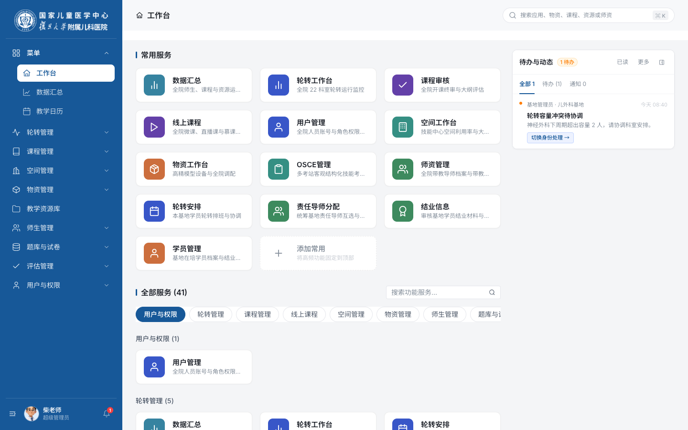
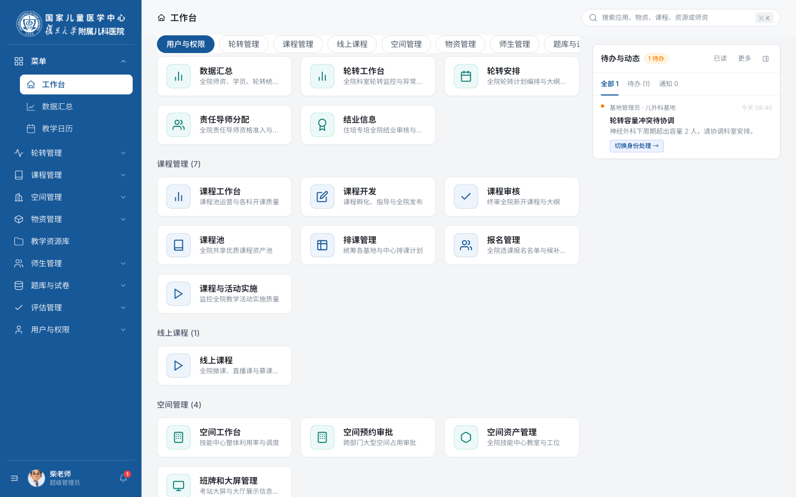
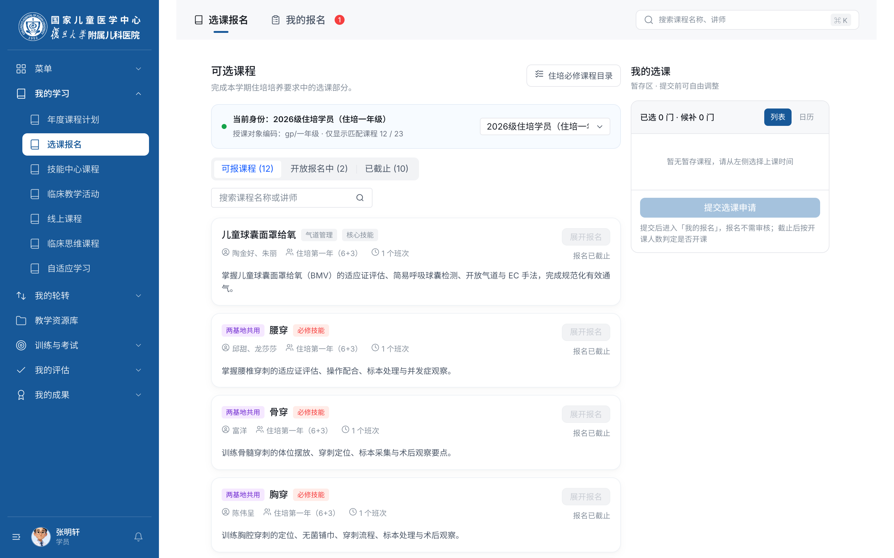

修改记录总清单（索引）
记录总数：4 项
| 序号 | 模块与改动主题（点击跳转） | 端别 | 定位 / 触发路径 | 涉及文件与留痕形式 |
|---|---|---|---|---|
| 01 | 移动端学员端 · 工作台补齐「师资申请」入口与弹窗 | 移动端 | 学员端 → 工作台 → 全部服务 › 考核与成长 → 师资申请 | 移动端/shared/tdesign-app.js · 图文对比（4 张） |
| 02 | 移动端教师端 ·「我的责任学员」缺失样式补齐与排版修复 | 移动端 | 教师端 → 常用服务 / 全部应用 › 带教与评价 → 我的责任学员 | 移动端/shared/tdesign-app.css · 图文对比（2 张） |
| 03 | PC 管理员工作台 · 图标配色收敛至复旦儿科官网三色浅底体系（方案 A） | PC端 | 院级管理员（manager.html） → 首页工作台（常用服务 / 全部服务） |
design-tokens.css + components.css + nav.css + account-hub.js · 图文对比（3 张） |
| 04 | 学员端选课报名 · PC 与移动端「班次」文案全部统一为「课次」 | 双端 | 学员端（student.html / 移动端/student-tdesign.html） → 选课报名 / 我的报名 |
shared/js/enroll-renderer-v2.js + 移动端/shared/tdesign-app.js · 图文对比（6 张） |
移动端学员端 · 工作台补齐「师资申请」入口与弹窗
定位：学员端（移动端/student-tdesign.html） → 工作台 → 全部服务 › 考核与成长 → 师资申请（与教师端保持一致，支持在「管理」中固定到首页常用服务及顶部全局搜索）。实现文件：移动端/shared/tdesign-app.js。
修改前 · 存在问题
- 移动端教师端工作台「全部服务 › 带教与评价」已配备「师资申请」按钮及列表/新建表单/详情三段式弹窗，但学员端
configs.student.apps、configs.student.support与serviceHallGroups均未注册该入口。 - 学员端打开「全部服务 › 考核与成长」仅见 4 项（理论考试、成绩与评估记录、反馈与学习计划、成果申报），无法发起师资申请。
- 师资申请表单中「职称自动校验」与「申请人信息」硬编码为教师
王老师 · EK1005 · 消化科，未适配当前登录角色账号。
修改后 · 改动说明
- 在
configs.student.apps与configs.student.support补齐「师资申请」配置项（图标file-signature、紫色徽标，与教师端一致）。 - 在
serviceHallGroups学员端「考核与成长」分组内紧邻「成果申报」加入「师资申请」，复用统一openFacultyApply三段式弹窗流程。 - 表单「职称自动校验」与「申请人信息」改为动态读取
currentAccount/config，学员端自动展示当前学员姓名、学号/工号与科室信息。

修改后 · 弹窗与表单交互留痕
改后 · 师资申请列表弹窗

改后 · 新建申请表单（动态学员信息）

移动端教师端 ·「我的责任学员」缺失样式补齐与排版修复
定位：教师端（移动端/teacher-tdesign.html） → 首页「常用服务」/「全部应用 › 带教与评价」→ 我的责任学员（组件 <fdek-mentor-mobile>）。修改文件：移动端/shared/tdesign-app.css（对应模板 移动端/shared/mentor-mobile.js）。
修改前 · 存在问题
mentor-mobile.js升级后新增的 22 个.fdek-mm-*类名在tdesign-app.css中全部缺失，导致页面大面积“无样式裸奔”。- 顶部「带教 1 / 3 人」与「修改个人简介」上下挤压；待办通知「访谈记录待审核」文字粘连无卡片底色，「全部已读」露出浏览器原生灰底黑框按钮。
- 学员头像（
.fdek-mm-avatar-img）未限制尺寸与圆角，原图撑满整张卡片；招收年度、绑定方式、轮转科室、最近访谈四个键值紧贴左对齐竖排。

修改后 · 改动说明
- 在
移动端/shared/tdesign-app.css中基于--fdek-*设计变量一次性补齐全部 22 个缺失.fdek-mm-*样式（校验剩余缺失为 0）。 - 顶部负荷栏改为白底圆角卡片左右两端对齐；未读通知改为浅橙提醒卡片，标题/正文/日期分层排布，右侧置「去处理」，底部「全部已读」改为蓝色文字链接。
- 学员头像限定为
44×44圆形（详情52×52）object-fit: cover并与姓名、工号横向排列；学员字段区重构为 2 列浅灰底卡片网格；顺带补齐更换导师待确认、徽章、退回说明、横向滚动子标签及禁用按钮态。

PC 管理员工作台 · 图标配色收敛至复旦儿科官网三色浅底体系（方案 A）
定位：院级管理员（manager.html） → 首页工作台（常用服务 / 全部服务，同时全局收敛共享 .s-service-tile-icon 样式）。参考规范：复旦大学附属儿科医院官网（https://ch.shmu.edu.cn/）三色体系。修改文件：shared/styles/design-tokens.css、shared/styles/components.css、shared/styles/nav.css、shared/js/account-hub.js。
修改前 · 存在问题
- 工作台服务卡片图标（
.s-service-tile-icon[data-tone]）使用 7 种高饱和实底色（钴蓝、紫罗兰、森林绿、鸭青、砖橙、玫红、灰青），同区混排形成视觉噪点，客户反馈“颜色太多”。 - 图标色板与左侧已确认的复旦品牌蓝（
#175898）及医院官网配色割裂，且同一业务分类内部卡片颜色不一致。

修改后 · 改动说明（方案 A）
- 对齐医院官网三色体系，将
--color-service-*与.s-service-tile-icon收敛为品牌蓝（#175898）、医技青绿（#21bcac / #117f74）、暖珊瑚橙（#f8955a / #c45b1e）三色，砍掉紫、粉、森林绿等杂色。 - 图标容器由高饱和实底白字升级为浅底 tint + 1px 细描边 + 彩色线框图标，整体观感轻盈专业、与左侧深蓝导航形成清晰主次。
- 按业务大类统一
account-hub.js中的卡片归属色（用户/课程/题库/蓝图用品牌蓝，轮转/空间/师生用医技青绿，物资/评估用暖珊瑚橙），同分类颜色一致。

修改后 · 全部服务分组色彩一致性留痕
改后 · 全部服务按业务大类统一三色归属（滚动视图）

学员端选课报名 · PC 与移动端「班次」文案全部统一为「课次」
定位：学员端 PC（student.html → 我的学习 → 选课报名 / 我的报名）与移动端（移动端/student-tdesign.html → 选课报名）。实现文件：shared/js/enroll-renderer-v2.js、移动端/shared/tdesign-app.js。
修改前 · 存在问题（移动端）
- 移动端选课卡片中，普通课显示「2 个班次」、专项课（「儿童导尿术（男性）」）显示「2 个课次」，而右侧展开按钮写死「查看班次」，造成同一卡片内「左课次、右班次」文案割裂。
- 选课空态提示、我的选课抽屉与日历提示、课程说明及 Toast 提示均混用「班次」。

修改后 · 改动说明（移动端）
mobileCourseSessionCountText统一输出「X 个课次 / 暂无课次」，右侧展开按钮统一改为「查看课次」。- 同步将课程简介/取消规则、空态提示、我的选课抽屉/日历说明及选课 Toast 全部由「班次」统一改为「课次」，与全站术语保持一致。

PC 端 · 选课报名（可选课程）修改前后对比
修改前 · 卡片元信息显示「1 个班次」、展开后按钮为「收起班次」

修改后 · 统一为「1 个课次」「收起课次」「请先选择课次」与「确认更换课次？」